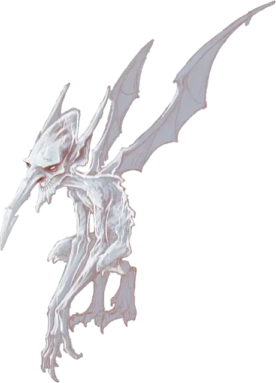

Ледяной мефит
Ice Mephit
Маленький Элементаль, Нейтральный Злой

Класс Защиты 11 Инициатива +1 (11)
Хиты 21 (6к6)
Скорость 30 футов, Полёта 30 футов
| мод | спас | ||
|---|---|---|---|
| СИЛ | 7 | −2 | −2 |
| ЛОВ | 13 | +1 | +1 |
| ТЕЛ | 10 | +0 | +0 |
| мод | спас | ||
|---|---|---|---|
| ИНТ | 9 | −1 | −1 |
| МДР | 11 | +0 | +0 |
| ХАР | 12 | +1 | +1 |
Уязвимость к урону Огонь
Иммунитеты Холод, Яд; Истощение, Отравленный
Чувства Тёмное зрение 60 футов, пассивное Восприятие 12
Языки Первичный (Акван, Ауран)
Опасность 1/2 (100 опыта; БВ +2)
Особенности
Предсмертная вспышка. Когда мефит умирает, он взрывается. Спасбросок Телосложения: Сл 10, каждое существо в 5-футовой Эманации, исходящей от мефита. Провал: 5 (2к4) урона Холодом. Успех: Только половина урона.
Действия
Коготь. Бросок рукопашной атаки: +3, досягаемость 5 фт. Попадание: 3 (1к4 + 1) Рубящего урона плюс 2 (1к4) урона Холодом.
Туманное облако (1/день). Мефит сотворяет заклинание Туманное облако, не нуждаясь в компонентах и используя Харизму как заклинательную характеристику.
Ледяное дыхание (Перезарядка 6). Спасбросок Телосложения: Сл 10, каждое существо в 15-футовом Конусе. Провал: 7 (3к4) урона Холодом. Успех: Только половина урона.
Бонус мастерства +2
Среда обитания Стихийные планы
Сокровища Отсутствуют
Мефиты
Зловредные элементали-безобразники
Мефиты — злобные и пакостные проказники, обитающие на Стихийных планах. Шесть наиболее известных разновидностей мефитов напоминают крылатых горгулий размером не больше полурослика, с утрированными чертами и телами, сотканными из двух стихий. Большинство из них живут исключительно ради себя, теша своё извращённое чувство юмора или непомерное самомнение в родных планах бытия. Некоторые, впрочем, служат гонцами или шпионами при джиннах и заклинателях.
Мефиты терпеть не могут покидать свои экстремальные стихийные пенаты. Будучи заброшены на Материальный план или в иные миры, они вымещают досаду злыми проделками и измываются над самыми слабыми созданиями. Когда же мефита уничтожают, он исторгает из себя вспышку первородной стихийной магии.
Ледяные мефиты обладают телами, сотканными из стылого воздуха и мёрзлой воды. Они испытывают особое удовольствие, замораживая предметы и подбрасывая снег за шивороты других.